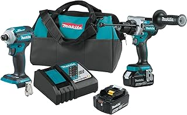

Do I Need an Impact Driver for Home Use?
The 30-Second Test
Answer yes or no to each:
1. Do I drive screws longer than 2 inches? (Deck screws, framing screws, lag bolts)
2. Do I build things outdoors? (Decks, fences, raised beds, treehouses, sheds)
3. Have I ever stripped a screw head so badly I had to drill it out?
If you said YES to any of these → you'll benefit from an impact driver.
If you said NO to all three → you don't need one. Spend the money on better drill bits and quality screws.
What an Impact Driver Does That a Drill Can't
A drill spins continuously. An impact driver delivers about 50 percussive blows per second in the rotational direction. This percussive force does three things a drill can't:
- Drives long screws without stripping the heads. The impacts break the friction bond between screw and wood, letting the screw seat without the bit camming out of the head.
- Won't twist your wrist. When a drill's clutch is set wrong and the screw bottoms out, the drill body spins — hard — and twists your wrist with it. An impact driver's hammer-and-anvil mechanism means the tool body barely reacts when the screw seats. Your wrist stays straight.
- Drives lag bolts through pressure-treated lumber. A cordless drill with 500 in-lbs of torque will stall on a 3/8" x 6" lag bolt. An impact driver with the same torque rating will drive it home. The difference in real-world driving power is dramatic.
When You Definitely DON'T Need an Impact Driver
- You only hang things on drywall. Drywall anchors and picture hooks use short screws with low torque requirements. A drill with a clutch set to 5-8 does this perfectly. An impact driver is overkill that risks punching the anchor through the wall.
- You assemble flat-pack furniture. IKEA furniture uses wood dowels, cam locks, and short screws into particle board. A drill at low clutch is better — an impact driver's percussive force will crack the particle board.
- You do mostly finish work. Cabinet hardware, drawer pulls, decorative hinges. Precision matters. A drill with a clutch gives you repeatable torque control. An impact driver doesn't.
When You Definitely DO Need an Impact Driver
- You're building a deck. Hundreds of 2-1/2" to 3" coated deck screws into pressure-treated lumber. A drill will do it — slowly, painfully, with stripped heads and a sore wrist. An impact driver will make it casual.
- You're building a fence. Similar to deck work but with shorter screws (1-1/4" to 1-5/8") and more of them. Speed matters more than raw torque.
- You're framing walls in a basement renovation. 3" construction screws into kiln-dried studs. The impact driver makes this effortless.
- You work on your car. Removing rusted bolts from brake calipers and suspension components. An impact driver with an adapter can break loose fasteners that a ratchet can't.
The Combo Kit Argument
If you're buying a drill anyway and don't already own batteries, a drill + impact driver combo kit is usually the cheapest way to get both tools. The Makita XT269M ($229) gives you a drill, impact driver, two batteries, a charger, and a case. Buying the drill alone with batteries costs $169. For $60 more, you get the impact driver — which would cost $149 if bought separately. The combo kit is the smart money move whether or not you "need" the impact driver today.

Makita XT269M 2-Piece Combo Kit
Drill driver + Impact driver · 2× 3.0Ah batteries · Charger · Hard case
Check price on Amazon →The Bottom Line
If you answered yes to the 3-question test at the top, buy an impact driver. The Ryobi PBLID01 at $79 is the best value for beginners. If you're buying a drill anyway, get the Makita XT269M combo kit at $229 — you'll pay $60 more for a tool that costs $149 alone, and you'll use it more than you expect. If you only hang shelves and assemble furniture: skip it. Use the money for better quality drill bits and a stud finder.